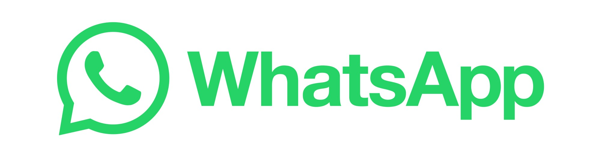

WhatsApp Spambot
The WhatsApp Automation Bot is designed to automate the process of sending messages to a specific contact or group on WhatsApp. It uses Selenium, a powerful web automation tool, to interact with the WhatsApp Web interface. The bot prompts the user to enter the recipient's name, the message to be sent, and the number of times the message should be sent.
Main Features
- Utilizing the Selenium WebDriver to open and control the Google Chrome web browser.
- Scanning the QR code to log in to WhatsApp Web.
- Identifying the target recipient by name using XPath.
- Sending the specified message multiple times as per the user's input.
I acknowledge that automation scripts like this can be misused for spamming, and I want to emphasize that I built this project solely for educational and learning purposes. I strongly believe in ethical practices and responsible use of automation tools. In a professional setting, automation can significantly improve efficiency and streamline repetitive tasks.
While I do not condone any unethical or spam-related activities, I am proud of the technical knowledge and skills I acquired during the development of this project.
Please note: It's important to abide by the terms of service of any platform you interact with, and using automation tools in violation of those terms is not recommended. Always use automation responsibly and respect the policies set forth by the platforms you use.